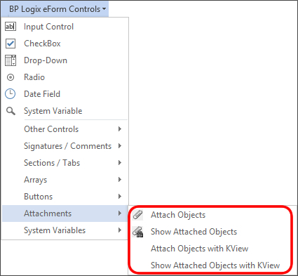
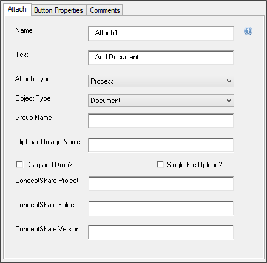

Attach Objects
Attach Objects

You can allow the user to attach a document by inserting an “Attach Objects” control.
An Attach Objects button appears as this in MS Word.

Control Properties
Double clicking the control allows you to access and configure its properties.
As of Apple iOS 6.2, when clicking on the attach button in Safari or Chrome, iOS will prompt the user to either take a picture or select one to attach from his photo library.
In addition, the attach objects control also allows you to call JavaScript client behaviors. You can specify the JavaScript call you'd like to make by entering it in the OnClientClick property of the control.

Name
The Control Name.
Text
The Text that will appear on the button's label.
Attach Type
Determines to which Process Director object the item will be attached. You can set the item to attach to the following objects:
- Form
- Workflow
- Timeline
- Process
The default selection is "Process".
Object Type
Determines whether the item to be attached is a document/file, or a clipboard image item that will be attached from the machine's clipboard memory. The default is "Document".
Group Name
The Group Name of the group to which the item will be attached.
 As a best practice, you should always apply Group Names for attachments, even if you only have a single attachment control, or a just a single document to attach. This will make your life much easier if you later want to export just certain documents, or access just certain types of forms in a process, or many other things.
As a best practice, you should always apply Group Names for attachments, even if you only have a single attachment control, or a just a single document to attach. This will make your life much easier if you later want to export just certain documents, or access just certain types of forms in a process, or many other things.
Clipboard Image Name
If the attachment item comes from the clipboard, this property will assign a file name to the item.
Drag and Drop?
Selecting this property will enable users to drag a file from the file system directly onto the Form to upload it.
Single File Upload?
Selecting this property will restrict each upload to a single file.
ConceptShare Properties
Users of ConceptShare can assign a Project, Folder, and Version to assign to the attachment.
Process Director v5.10 and higher supports Multi-File Upload support, but to use it with the Word Form Designer, you must use the Attach control tag, instead of using the GUI control in Word.
Form Definition
Additional properties are available for the Attach Objects control in the Form Controls properties Tab of the form definition. Opening the control's property in the Form Controls tab will display the properties dialog box to access the additional properties.

The relevant properties are:
|
PROPERTY |
DESCRIPTION |
|---|---|
|
Min |
The minimum allowable file size for the attachment, in Kilobytes. |
|
Max |
The maximum allowable file size for the attachment, in Kilobytes. |